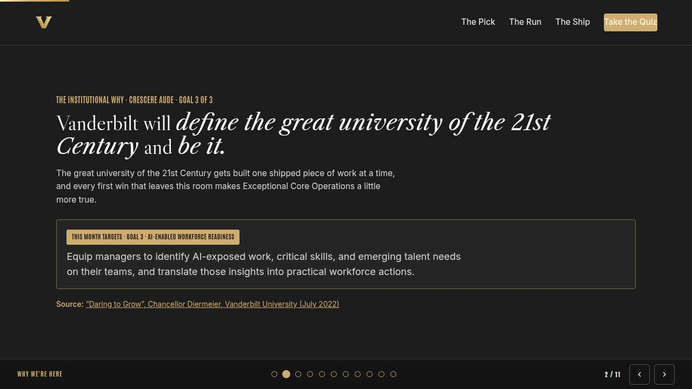
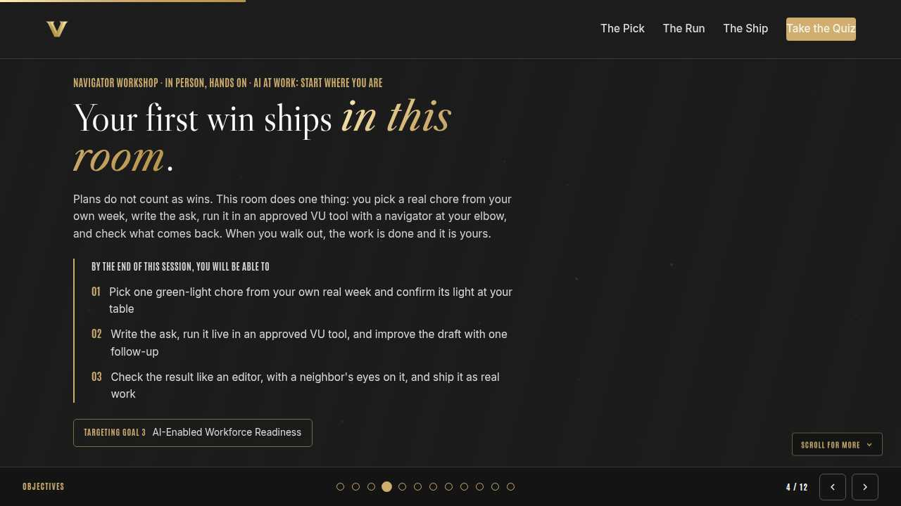
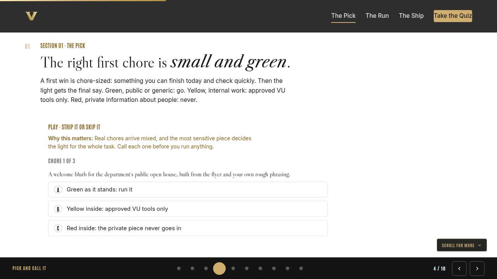
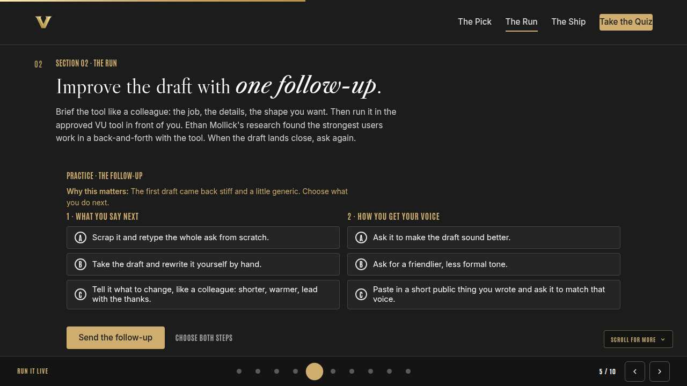
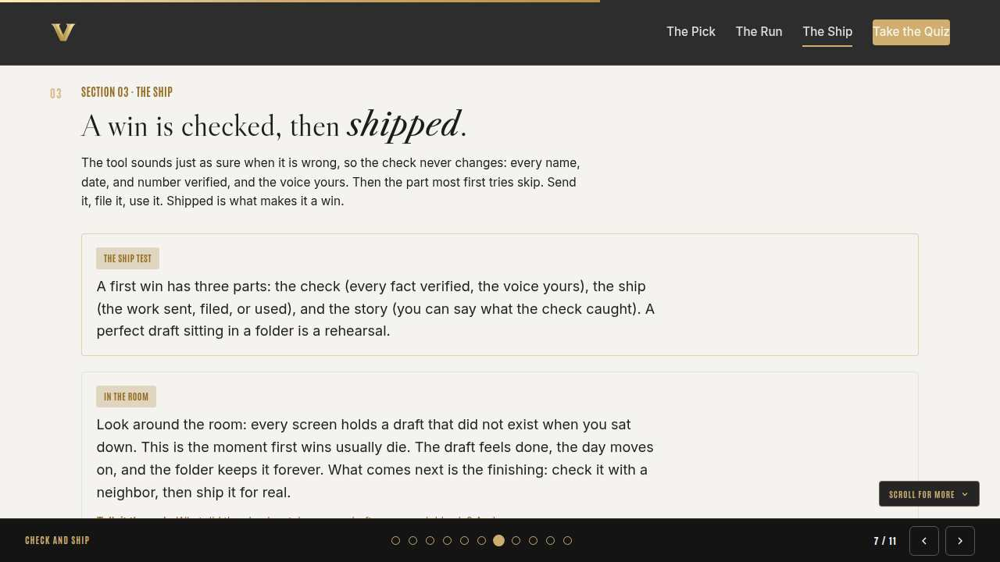
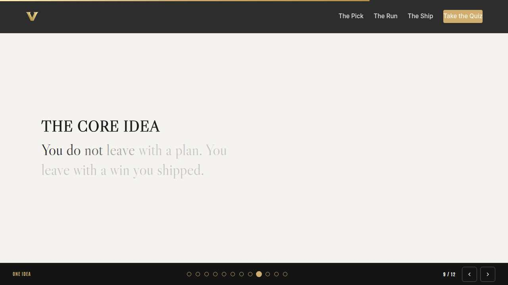
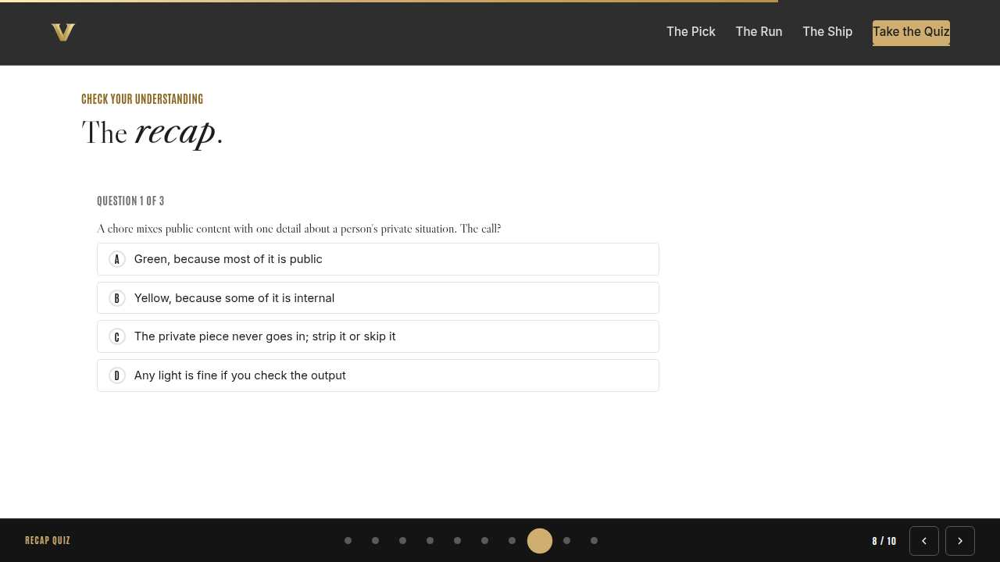
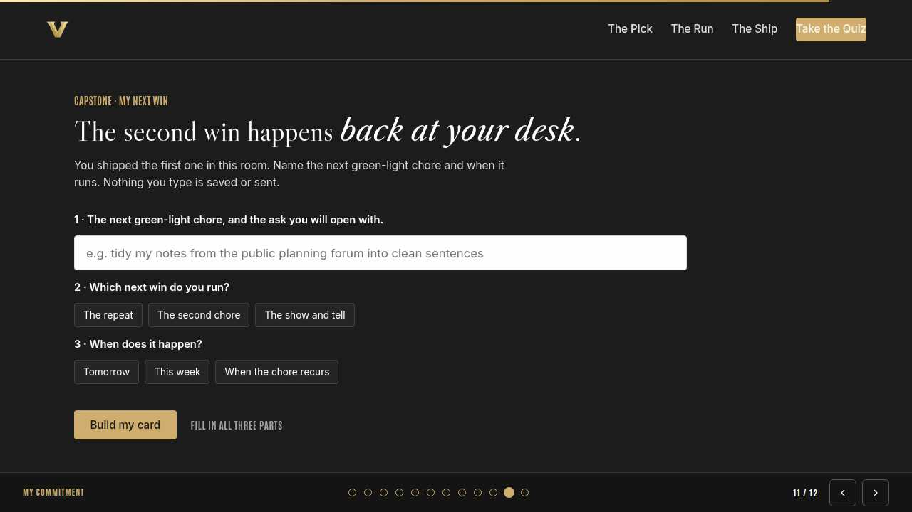
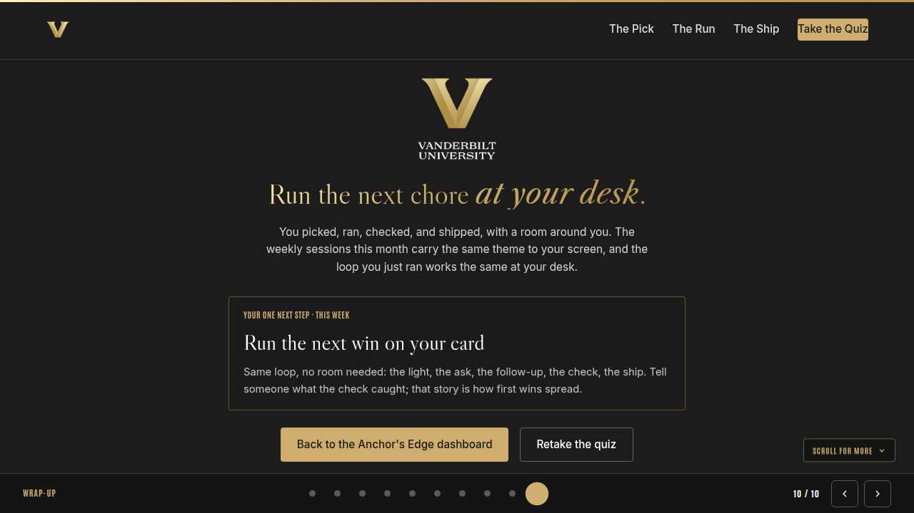

Vanderbilt · Anchor's Edge · ATD facilitator guide · print edition
The Sandbox, the facilitator guide

Run of show
| Screen | Full (min) | Core (min) |
|---|---|---|
| Welcome / QR | 3 | 2 |
| Why we're here | 4 | 2 |
| Objectives | 3 | 2 |
| Pick and call it | 9 | 6 |
| Run it live | 11 | 8 |
| Check and ship | 9 | 6 |
| The core idea | 2 | 1 |
| Recap quiz | 5 | 4 |
| Capstone commitment | 6 | 3 |
| Closing | 2 | 2 |
| Total | 54 | 36 |
The goal this month serves
Goal 3, AI-Enabled Workforce Readiness.
Audience
All Vanderbilt staff, no AI experience assumed; many will run their first tool in this room. In person at tables of four to six, learners on their own devices via the welcome QR, navigators circulating; works from a dozen people to a full room.
Room setup
In person, navigator led: projector plus presenter device, tables that pair easily, learners on their own devices via the welcome-slide QR. Nothing typed into the deck is saved or sent.
Materials
- Meeting platform with screen share and breakout rooms; deck link ready to paste in chat
- Facilitator machine with the facilitator edition open; notifications off
- Learners on their own devices with the learner link
- Chat open for share-outs; the capstone copy button pastes there cleanly
A week before
- Run the learner edition start to finish and do every interaction honestly; you will demo at least one live.
- Read this month's theme page on the Anchor's Edge dashboard so the goal tie-in is fluent.
- Send the invite with the learner link and one line on what to bring.
The day before
- Test screen share with the facilitator edition; confirm the notes rail is readable.
- Open the learner link on a second device; the QR must land there.
- Run the section interactions once so you can drive them without reading.
30 minutes before
- Welcome slide up as people join; link pasted in chat.
- Close every other tab; silence the machine.
- Breakout rooms pre-configured in pairs.
When things go sideways
If The projector or room screen fails: The deck already lives on learner phones via the welcome QR; narrate from your own device and keep the room moving. Nothing in the session needs the big screen.
If The venue wifi drops or logins to the tool fail at a table: Phones on cellular still reach the deck, and navigators carry the login help. Pair anyone still locked out with a neighbor to co-run one chore on one screen; two names on one win is still two wins.
If Someone reads out a chore full of details about a real person: Protect them warmly and immediately: 'Hold that. Roles, never names, and the private details stay out of the tool.' Then help them strip it to the green core in front of the table; the save is the teaching.
If A table finishes early and gets restless: Hand them the stretch: run the same chore with a differently shaped ask, compare the two drafts, and pick the better opening line to share when the room reconvenes.
Tough questions, ready answers
Q: Which tool are we using, exactly?
The approved VU tool set up for this room; navigators have the current list from the Anchor's Edge dashboard. The loop you are learning is portable: the light, the ask, the follow-up, and the check work the same in every approved tool.
Q: My whole job is confidential. What is my green chore?
Every role holds a generic layer: announcements, outlines, plain explainers, tidying your own phrasing. Strip the specifics and the skeleton is green. The navigators love this puzzle; wave one over and you will have a chore before the section ends.
Q: Is shipping work the tool drafted honest?
You read every line, verified every fact, and made it sound like you; the judgment and the responsibility stayed yours. That is how templates and spell-checkers have always worked. What would cross a line is shipping anything you never checked, with or without a tool.
Copy-paste templates
Pre-work invite (paste into the calendar invite)
Subject: The First-AI-Win sandbox, in person. Bring a laptop or a phone and one boring chore from your real week: a draft, a summary, notes to tidy. No AI experience needed; you will run your first win in the room with a navigator nearby, and you will leave with it shipped.
7-day pulse (send one week after)
Subject: Did the second win ship? Three lines, reply whenever: 1) Did the next-win chore on your card run? 2) What did the check catch? 3) Who have you shown your first win?
After the session
Seven days out, send the pulse: 'Did the next win on your card ship? What did the check catch? Who have you shown?' Count of shipped second wins is the Level 3 metric for the workshop.
Welcome / QR Full 3 min · Core 2
Get everyone into the deck on their own device and set the tone: 90 minutes, in person, hands on.
Say
“Welcome to the Navigator Workshop. Scan the code so this session runs on your device too. 90 minutes, one focus: The First-AI-Win sandbox: run one real chore, live, with help in the room.”
Do
- Slide projected as people arrive; phones up before you speak.
- State the norm once: type into your own device, nothing you enter is saved or sent.
Watch for: People lurking without the deck open. The interactions only land if the deck is on their screen.
Transition: “Before the topic, thirty seconds on why Vanderbilt is asking for this hour.”

Why we're here Full 4 min · Core 2
Anchor the session in the Chancellor's charge and name the goal this month serves, inside one minute.
Say
“One sentence from the Chancellor sits over everything we do: Vanderbilt will define the great university of the 21st Century and be it. The great university of the 21st Century gets built one shipped piece of work at a time, and every first win that leaves this room makes Exceptional Core Operations a little more true. This month serves Goal 3, AI-Enabled Workforce Readiness.”
Do
- Read the mission line slowly, once; name the goal, once.
- No discussion here; the whole slide is under a minute.
Transition: “Here is what you will be able to do in 90 minutes.”

Objectives Full 3 min · Core 2
Set the contract for the session in about a minute; this slide is also the roadmap.
Say
“By the end of this session you will be able to: pick one green-light chore from your own real week and confirm its light at your table; write the ask, run it live in an approved vu tool, and improve the draft with one follow-up; check the result like an editor, with a neighbor's eyes on it, and ship it as real work. We take them in order, and each one has something to practice.”
Do
- Read the three objectives briskly; they double as the agenda.
- Point at the goal chip once, then move.
Transition: “First objective.”

Pick and call it Full 9 min · Core 6
Get one real, chore-sized, green task chosen per person, with the light confirmed at the table before anything runs.
Say
“Everything today happens for real: a real chore, a real tool, real shipped work. So the first job is picking well. Chore-sized means you can finish it today and check it before you forget you wrote it. Then the light rules everything: green, public or generic, go. Yellow, internal, approved VU tools only. Red, private information about people, never. Your table is your safety net; nobody runs a chore the table has not called.”
Do
- Tables of four to six, one printed traffic-light card per table; point at it as you teach the light, and leave it face up all day.
- Run Strip it or skip it on learner devices; after the third chore, hold the room for a beat: the kind intention did not change the light.
- Then the table round: each person reads their chore aloud and the table calls the light together. Circulate with the navigators and listen for mixed chores.
Ask
“Who has a chore the table could not agree on?”
Expect:
- Mixed chores with one sensitive detail
- Whole weeks that feel yellow
- Someone whose chore is really a project
Respond: Perfect material. Strip the sensitive piece and call what is left; shrink the project to its first chore-sized slice. The table plus the light settles almost everything.
Debrief: Chore-sized, green, and called out loud at the table. That pick is half of today's win.
Watch for: People choosing an impressive chore to justify the trip. Shrink it warmly: boring ships, impressive stalls.
Transition: “Chores picked and called. Now they go into the tool.”
Core path: Core: run the trainer, then one chore read aloud per table instead of the full round.

Run it live Full 11 min · Core 8
Every person writes the ask, runs it in the approved VU tool, and practices one real follow-up on the draft that returns.
Say
“Now the part you came for. Open the approved VU tool and write the ask the way you would brief a colleague: the job, the details that matter, the shape you want back. Then send it. When your draft lands, resist the two old reflexes, starting over and rewriting by hand. Ethan Mollick helped run one of the first big field studies of these tools at work, and the people who got the most out of them worked in a running back-and-forth: hand a piece over, react, steer. That is the move you practice today, the follow-up. Tell the tool what to change, plainly, and watch the second draft.”
Do
- Give the room the go and let it get quiet; drafting is the session working. Navigators move table to table for login trouble and thin asks.
- When most drafts are back, run The follow-up on learner devices; it names the move everyone is about to make on their own draft.
- Then the neighbor beat: say the one change aloud to a neighbor, then type exactly that to the tool. If a volunteer offers one, read a strong before-and-after to the room.
Ask
“What did your follow-up change that your first ask never mentioned?”
Expect:
- Tone and length, most often
- The audience it was for
- The shape: a list, a paragraph, a subject line
Respond: Notice the pattern: everything the tool guessed wrong was something the ask never said. The follow-up is how you find out what your asks leave out.
Debrief: The ask is a brief, the draft is a start, and the follow-up is the skill. Plain sentences, both times.
Watch for: Someone quietly pasting internal or personal content to make the chore work better. Redirect warmly, and loudly enough to teach: keep it green today, and yellow work lives in approved VU tools on its own time.
Transition: “Drafts are close. The last stop makes them real.”
Core path: Core: skip the neighbor beat; everyone sends one follow-up solo while you narrate the pattern.

Check and ship Full 9 min · Core 6
Install the editor's check with a partner's eyes, then have every person actually ship the checked work before the capstone.
Say
“One warning keeps you safe: the tool writes with the same confidence whether it is right or wrong. So the check never gets skipped. Facts first: every name, date, and number, verified or cut. Then voice: one read for the sentence you would never say. Today you get a luxury you will not have at your desk, a neighbor's eyes. Then the step that makes it a win: ship it. Send it, file it, use it, before we build the cards.”
Do
- Pair neighbors across the table; swap seats or swap devices, author's choice. Facts first, then the voice read.
- Show the ship test card and let the folder line land; the room will recognize it.
- Run the discussion, then call the ship: everyone sends, files, or schedules their work now. Ask for hands as pieces ship; count aloud and let the room hear the number grow.
Ask
“What did the check catch on your draft or your neighbor's?”
Expect:
- An invented or unverifiable detail
- A wrong name or date
- A sentence that sounded like nobody at the table
Respond: Every catch is the lesson working: errors hide inside polish. The check is quick, and it is what makes the shipping safe.
Debrief: Checked, shipped, and a story about what the check caught. That is a complete first win, and everyone in the room has one.
Watch for: Perfectionists polishing instead of shipping. Name it kindly: a shipped decent draft beats a perfect one in a folder, and the polish can continue after it ships.
Transition: “Everyone shipped. Now the card that makes it a habit.”
Core path: Core: pair check runs on facts only; the ship call happens whole-room, hands up as pieces go.

The core idea Full 2 min · Core 1
Land the one sentence the session exists to install.
Say
“If you keep one sentence from today, this is it. Read it once, out loud: Run one real chore, check every fact, and ship it before you leave the room.”
Do
- Pause two beats after reading; the word animation carries it.
Transition: “The recap makes it stick.”
Core path: Core: pass through in stride; the sentence reads itself.

Recap quiz Full 5 min · Core 4
Score the learning while it is fresh; wrong answers are teaching moments, not failures.
Say
“Three questions, on your own screen. Answer honestly; the explanations are where the learning sticks.”
Do
- Give the room 90 seconds to run it individually.
- Ask for a show of results in chat: how many got 3 of 3?
- Read out the explanation for whichever question drew the most misses.
Watch for: Rushing past the why lines. The explanations carry the teaching.
Transition: “Now point it at your real week.”

Capstone commitment Full 6 min · Core 3
Convert the session into one named, dated action per person.
Say
“The first win is shipped, which makes this card different from most: it is about your second win. One green-light chore from the week ahead, the ask you will open with, and when it runs. Build the card, then copy it somewhere you will see it back at your desk. Quiet room, go.”
Do
- Two quiet minutes; everyone builds their own card.
- Invite two or three volunteers to read their card aloud or paste it in chat.
- Remind: copy the card somewhere you will see it this week.
Watch for: Vague entries. Nudge for a name-able situation and a real date.
Transition: “Last slide.”

Closing Full 2 min · Core 2
End with the next step and where this thread continues.
Say
“You came in with a chore and you are leaving with shipped work and the loop that produced it. The weekly sessions carry this month's theme the rest of the way: Manager Monday gives managers the tone-setting side, Take-Off Tuesday runs this same loop on screen for anyone who wants another rep, and Thrive Thursday builds the steadiness for everything these tools keep changing. If the leader's-eye view interests you, this month's LinkedIn Learning pick is Generative AI for Business Leaders with Kian Katanforoosh; a fine companion, not an assignment. Your only real next step is the card in your hand.”
Do
- Point at the next-step card; one sentence.
- Name the rest of the week's rhythm: the other sessions echo this month's theme.
Generated from facilitator/notes.json. The on-screen facilitator edition lives at ./ alongside this guide.